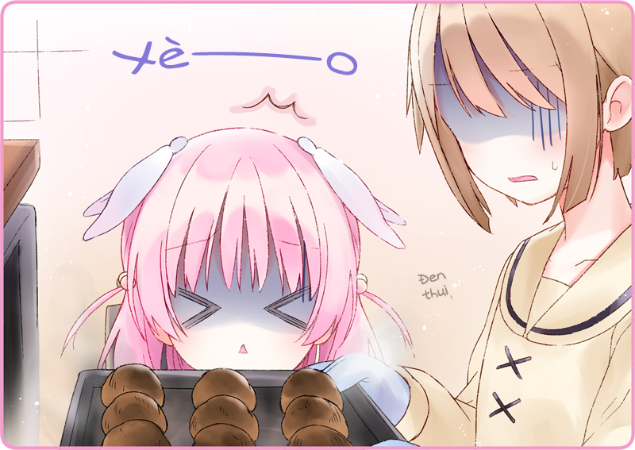

Thứ Tư.
Đối với chúng tôi thì đây là một ngày mang ý nghĩa rất đặc biệt. Chiếc đèn dây tóc nằm im. Căn phòng yên tĩnh như thể thời gian đã dừng lại. Duy có chú mèo đen Chano là đang vung vẩy cái đuôi, tựa hồ nhận ra đồ ăn không được đặt ở chỗ thường lệ, rồi leo tót lên lầu.
[Ngày nghỉ định kỳ]
Tấm bảng treo trên cửa viết như vậy.
Một ngày trong tuần, chúng tôi sẽ được nghỉ và tự do làm bất cứ việc gì. Ngay như những cô gái Hình nhân cùng cần một ngày để bảo trì mà.
Usami: “... như thế này chăng…”
Về phần tôi, tôi đang đứng trong căn bếp mờ mờ tối, một tay cầm chiếc bát, tay kia dùng cây vét bột bằng gỗ nhào đều những thứ bên trong. Tôi vốc thử một nắm, chỗ bột vàng mịn từ từ tuột xuống. Sau đó tôi vắt hỗn hợp lên khay nướng bằng một chiếc túi bắt kem.
Haizakura: “Chano~ Đến giờ ăn rồi~”
Tiếng chân ai đó tất tả bước từ trên lầu xuống.
Bên trong trà quán tĩnh lặng, giọng của Haizakura đánh động thấy rõ.
Usami: “Ủa, ban nãy tôi mới thấy nó lên lầu mà?”
Haizakura: “Myu? Kỳ thật nha.”
Usami: “Có khi nó lên sân thượng phơi nắng rồi cũng nên.”
Haizakura: “Vậy chắc lát nữa nó sẽ về thôi nhỉ.”
Em ngồi xổm xuống và chuẩn bị đồ ăn cho Chano. Đó là một đĩa thức ăn cho mèo với thành phần chính là phần thừa của cá được hầm nhừ.
Haizakura: “Tiện cho em hỏi, Usa-san đang dùng bữa ạ?”
Usami: “Cái này hả, tôi đang học nấu ăn ấy mà… Oái, hình như cho quá tay rồi thì phải…”
Haizakura ngó vào trong gian bếp, nom chừng hiếu kỳ với việc tôi đang làm.
Sau khi đã cẩn thận bóp bột bánh ra khay, tôi bắt đầu tạo hình cho từng cái.
Usami: “Từ lúc đến quán Mèo Đen tôi đã quen làm đồ uống với bánh kẹo tươi rồi… cơ mà bánh nướng thì hẵng còn non lắm. Cần luyện tập thêm.”
Haizakura: “Bánh nướng… thích ghê!”
Usami: “Bánh su đấy. Tôi mà làm ngon thì mình cùng ăn nhé.”
Haizakura: “Vâng ạ!”
Sau khi tạo ẩm cho vỏ bánh bằng vòi phun sương, tôi cho tất cả vào trong lò nướng.
Haizakura quan sát bên cạnh tôi, đôi mắt em long lanh kỳ vọng.
Gekka: “Có mùi giống mùi cháy bốc ra từ ống khói.”
Người vừa bỗng đâu ló mặt là Gekka.
Cô bé đang ôm Chano trong lồng ngực. Có khi hai đứa vừa chơi với nhau không chừng.
Usami: “Mùi cháy á… hay tại phần nhiệt dư trong lò không thoát ra được?”
Gekka: “Hôm nay là ngày nghỉ kia mà…”
Haizakura: “Ngài ấy đang tập làm bánh su ạ!”
Usami: “Khó ra phết đấy. Tôi toàn phải dựa vào sổ hướng dẫn.”
Tôi lật giở từng trang trong quyển vở công thức người tiền nhiệm để lại.
Từng món ăn trong này đều được ghi chép hướng dẫn vô cùng tỉ mỉ, đến độ nếu không có nó, có khi tôi còn chẳng làm được gì ra hồn.
Usami: “Nhưng mình không thể dựa vào quyển sổ này mãi được.”
Phải, vì mục tiêu trở thành một nhân viên nhà bếp độc lập.
Gekka: “Nghe nói sắp về rồi.”
Usami: “Hả?”
Gekka: “Người đứng bếp ấy.”
Haizakura: “Myu?!”
Gekka: “Là người tiền nhiệm đã để lại quyển sổ đó ấy.”
Usami: “Ơ… k-khoan, từ từ đã…”
Gekka: “Sao vậy?”
Usami: “Chứ không phải cái người viết ra quyển sổ này bị cho thôi việc rồi à?”
Gekka: “Tôi chưa từng nghe bà chủ ra quyết định nào như vậy bao giờ…”
Usami: “Vậy là người đó chỉ nghỉ phép thôi sao?”
Gekka: “Được điều đi làm một nhiệm vụ khác thì đúng hơn.”
Usami: “Thế… người đó mà về thì tôi sẽ ra sao?”
Gekka: “Chuyện đó…”
Cô bé thoáng lộ vẻ trầm tư.
Rồi lại quay sang nhìn tôi bằng ánh mắt lãnh đạm như mọi khi.
Gekka: “Bất quá thì bị đuổi việc chứ gì.”
Usami: “Không đâuuuuuuuuuuu!!!!!!”
Haizakura: “Em không muốn Usa-san nghỉ việc đâuuuuuuuuuu!!!!!!”
Usami: “Em không nói thì tôi cũng không nghỉ đâu! Mãi tôi mới kiếm được việc mà… Mãi tôi mới quen việc mà… Với cả…. với cả…!”
Gekka: “Bình tĩnh lại đi.”
Usami: “Tôi đang cố gắng hết sức đây. Xem này, để tôi phô diễn kỹ năng bằng cách nướng chỗ bánh này chuẩn đét cho em coi!”
Gekka: “Người quyết định là bà chủ chứ có phải tôi đâu.”
Karasuba: “Này, mọi người đang làm gì thế hả?”
Karasuba-san nhìn vào trong bếp, trông thần sắc có chút hoảng loạn.
Karasuba: “Sao lại có mùi cháy khét thế kia?!”
Usami: “Hở?... AAAAAAAA!!!!!”
Khói đang tràn ra ngoài lò nướng qua khe hở.
Tôi cuống quýt mở ra kiểm tra bên trong, nhưng đã quá muộn.
Bánh su vốn có màu vàng, giờ đây đã cháy đen không rõ hình hài.

Usami: “Thế là xong phim…”
Có lẽ tôi đã làm sai ngay từ khâu điều chỉnh nhiệt độ.
Đáng ra tôi phải để ý khi Gekka bảo là có mùi cháy chứ.
Karasuba: “Thế này thì… làm sao ăn được nữa…”
Haizakura: “Umyumyu! Trẳng ngoong trút nào!”
Usami: “Vừa nói xong đã nhón ăn cho được!”
Karasuba: “Nào, nhè ra nhanh! Chano cũng đừng có ăn!”
Usami: “Aaa… tôi vốn chỉ định trổ tài bếp núc thôi mà…”
Gekka: “Xem ra chỉ còn cách sa thải thôi nhỉ.”
Usami: “Không đâuuuuuuuuuuuu!!!!!!!!!!!”
＊ ＊ ＊
Usami: “Hầy…”
Tôi lảo đảo lê bước theo cái bóng đổ dài ngoẵng trên mặt đường.
Ông Mặt Trời nom như khuôn mặt chảy xệ đang dần lặn xuống đằng sau tòa thành Yamanote. Còn ánh đèn đường thì cứ nhấp nha nhấp nháy, chẳng thể trông cậy vào được.
Usami: “Đúng là thâm sâu khó lường mà…”
Từ lúc ấy tôi đã thử làm bánh nướng Tây phương chẳng biết bao nhiêu phen, vậy mà phen nào cũng thất bại.
Thế là tôi bèn sang quận Hai, nghía qua những cửa hàng bánh kẹo của Tây hòng tham khảo, nhưng đó lại là cả một tân thế giới rực rỡ chói lòa. Vô số chiếc kệ thủy tinh xếp hàng hàng lớp lớp nào bánh nào kẹo sáng bóng tựa bảo ngọc, khiến cho cái cảm giác bại trận đâm tôi không trượt phát nào. Thành thử tôi mới thất thểu lang thang trên con đường lát đá thế này đây.
Xe điện phố vừa khi chạy đến, phát ra âm thanh cơ hồ giục giã. Vì vừa đúng giờ tan tầm, nên người người đang đổ xô lên toa xe bé tẹo. Dù vậy tôi vẫn chưa muốn về nhà. Một mặt không dám thừa nhận sự thật rằng ban đầu mình trả tiền vé chỉ để đổi lấy tâm trạng ỉu xìu, mặt khác, bụng tôi đã réo ùng ục từ nãy tới giờ rồi. Hẳn đó là nguyên do chính làm tôi sa sút tinh thần.
Tôi liếc qua nhà hàng đồ Tây gần đây, có điều nghe chừng tình hình tài chính hiện tại của tôi khó mà kham nổi thứ gì ở đó rồi. Chẳng biết làm sao, tôi lưỡng lự, rồi bắt đầu dạo quanh thị trấn trong vô định…
Usami: (... mùi gì thơm quá.)
Mùi nước dùng thân thuộc này đang kích thích khứu giác của tôi. Cơ mà nhìn bề ngoài thì nơi này giống cửa hàng rượu hơn chứ nhỉ? Suy luận sao cũng chẳng ra manh mối. Họ dùng một góc quán để bán đồ uống cùng đồ nhắm. Hẳn đây là nơi người ta hay gọi là quán nhậu. Nhìn kỹ hơn, tôi chợt nhận ra cửa hàng rượu và quán nhậu đi vào bằng hai cửa khác nhau. Bên trong quán đông kín người, xem bộ nơi này làm ăn cũng khấm khá.
Vừa bước chân vào, tôi được một chị gái đang lau dọn quầy uống chào đón. Chị ấy vận trên người một bộ kimono thêu họa tiết gợi người ta nghĩ về bầu trời đêm, lại còn thắt chéo khăn tasuki
[1] sau lưng. Mái tóc ngắn ngang vai của chị khẽ lay động. Trên đầu chị là một tấm vải tam giác hay dùng khi làm bếp, và một ống khói màu xám gắn sau lưng…
… Ống khói á?
[1] Tasuki là một dải băng vài thường dùng để bó tay áo rộng của kimono để không bị vướng víu khi lao động.


 “Chào buổi tối.”
“Chào buổi tối.”